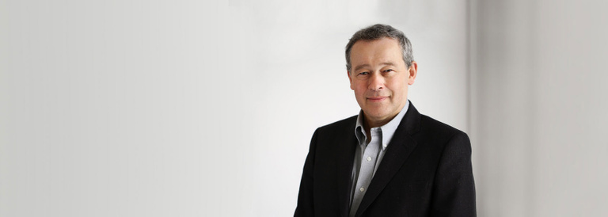

<section class="section team_detail_wrapper">
  <div class="container">
    <div class="team_detail_banner">
      <a href="#">Leadership</a>
    </div>

    <div class="team_detail_id">
      <span>Peter Rawlinson</span>
      <span>CEO & CTO</span>
    </div>

    <div class="team_detail_featured_image">
      
    </div>

    <div class="team_detail_content">
      <h1>Peter Rawlinson serves as the Chief Executive Officer and Chief Technology Officer of Lucid.</h1>

      <p>As CEO, Peter is responsible for all strategic and business aspects of the company. As CTO, he is responsible for the creation and delivery of all Lucid products. He brings over 30 years of automotive industry experience to bear in these roles.</p>

      <p>Prior to Lucid, Peter was Vice President of Vehicle Engineering at Tesla and Chief Engineer of the Model S, where he led the engineering of the Model S from a clean sheet to production readiness while building the engineering team.</p>

      <p>A graduate of Imperial College, University of London, Peter was formerly Head of Vehicle Engineering at Corus Automotive, Chief Engineer at Lotus Cars, and Principal Engineer at Jaguar Cars.</p>
    </div>
  </div>
</section>